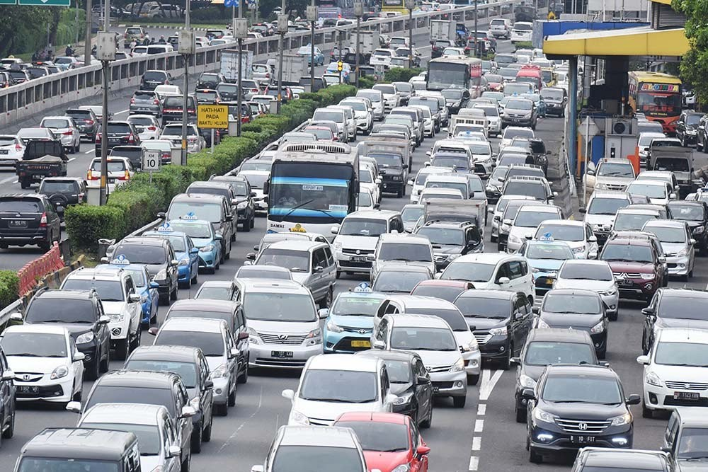
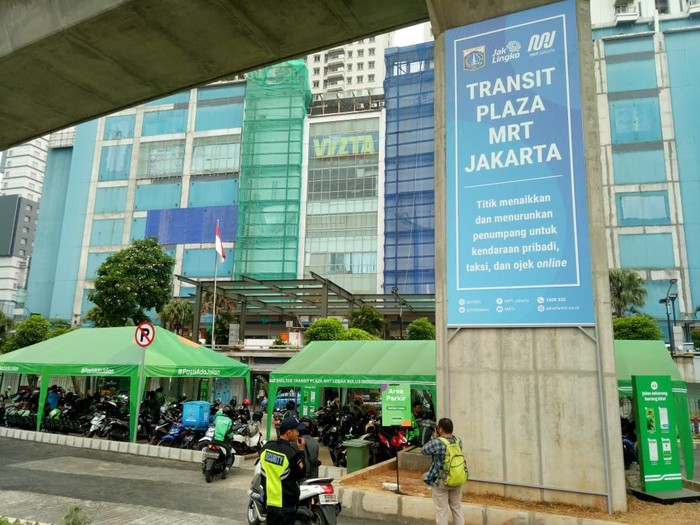
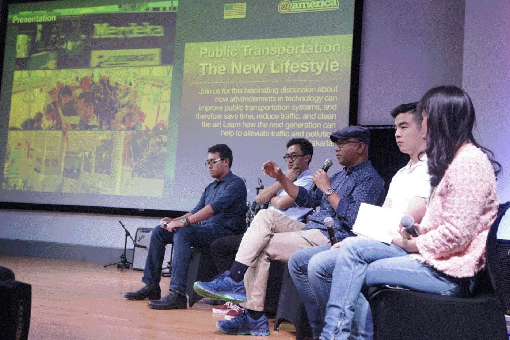

The city of Jakarta has always had extreme issues with traffic and air pollution, consistently being ranked in the top 10 cities with the worst of both categories. Once you step outside for a second, the reason becomes clear: there is an abundance of private vehicles and a lack of efficient public transportation. A SHOCKING STATISTIC is that the number of privately owned vehicles in Indonesia increases by 11% annually, while road lengths only increase by 0.01%. Whatever form of public transportation there is, either it's inefficient or it's facilities are extremely poorly managed.

Traffic on Jakarta's highway In 2009, however, a startup called Gojek revolutionized transportation as a whole by offering two-wheeled (motorcycles) ride-hailing services, greatly helping with last-mile, or short distance transportation. Afterwards, in 2017, the Jakarta MRT project was announced and with it came hope for a seamless mode of transportation that can take people through the middle-mile in a short amount of time for an extremely cheap price. Standard Jakarta MRT vehicle
Preparation for the Event
I didn't want this golden opportunity to go to waste, so I wanted to raise awareness about the issue. I reached out to MRT Jakarta, Gojek, and the Indonesia Transport Society, held individual meetings with each party to discuss the possibilities of the new system, then initiated group meetings where we discussed potential collaborations, modeled situations, and brainstormed ideas for marketing. Among other things, we came to the conclusion that a collaboration between the MRT system, providing the middle miles, and Gojek, providing the first and last mile, would greatly reduce the traffic in the stations and encourage people to take this form of public transportation.

Gojek Ride-Hailing Area at MRT System
The Event Itself
In the end, I organized an event at @america, the U.S. embassy's cultural center in Jakarta, with the President Director of MRT Jakarta, Gojek's Head of Business Intelligence, and a Policy Analyst from the Indonesia Transport Society giving presentations about our findings. With the help of @america's advertising, more than 150 people came to watch the talk, along with several media outlets. The event went by successfully and even now, there is still so much that could be done to reduce the traffic problem in Jakarta.

Presenters during the open Q&A session